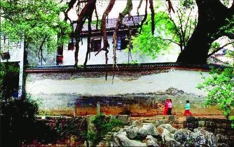
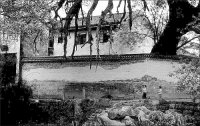
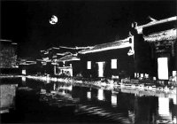
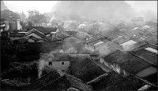

车窗外星光闪烁，黄姚在随车轻晃的梦里，像又一个丽江或周庄。




到了，村口是近十公里笔直，颠簸的村道，四周是广袤的冬水田，田边不连续的山，笔架似的，又像屏风，山下的水塘倒映着山形树影，水汽氤氲，山色如墨。十里水田像广阔的前台，静静地衬着黄姚镇的安闲。
广西昭平的古镇黄姚，仍保留着原汁原味的古朴风貌
左边是条现代的大街，右边就是黄姚古镇了。
居然有商店、邮局、饭馆，包括权二的米粉店，一帮人呼啸而入，主人自己炒来作早餐的米粉、酸菜、九层糕，没了，就像从来没有出现过，临走，桌上多了一堆毛票。
店家的酸菜放了点糖，咀嚼起来，酸酸甜甜的，很美的感觉。
进镇。迤逦而行，许多窄巷仅可容一人侧身独行，途经双重门，逆光，阳光如瀑布般倾泻下来，淋过双重门和门下闲坐聊天的人。有姐弟俩在金黄的稻秆旁玩耍，黄狗在暖暖的阳光下眯起了眼，阿婆依着门坎在做针线，阳光从脸上一寸寸移开，一群走地鸡在巷里自在地觅食。
司马第，吴氏宗室，一块块显赫的牌匾诉说着昔日的辉煌，像姨太太遗下的首饰盒，尘封着对往日无尽的追忆，“锦瑟无端五十弦，一弦一柱思华年”……
溪边水井栏杆，井水清澈见底，“有鱼百许头，空游无所依”，村妇们在井头溪边，淘菜洗衣，菜渣、闲话都随一溪春水东流去。
古榕庞大的躯干伸向小溪，从空中垂下缕缕气根，根根扎向水面，水上的树、水面的鸭、水中的游鱼、本相与倒影、现实和虚幻，在浅浅一溪如银般的水面上连为一体。
从一排过河的垫脚石上走过，惊起知春的水鸭三两只。
青石板的路上，有一尾三尺长的鱼形石，远远望去，青石路尤如凝固的溪流，鱼形石如有鲤鱼翻滚其间。
田螺山前溪流涓涓，溪上小桥，桥长孔密，连绵的拱形，像古罗马的引水渠。
田螺山旁有文明阁，下望有一家抗战时国军的战地医院，墙身又分明漆有为人民服务五个大字，文明阁极似戏台，看下面演的文明戏，我在戏外还是戏里？一时无语。小鸟从枝头跃起，一阵颤动后，枝头又归于寂静。
吃饱了饭，在店家的屋顶阳台上，眯起眼睛晒太阳。暖风中飘来阵阵晒腌肉的肉香和晒青菜的清香，直熏得游人也醉了。
这是阳光下黄姚的景致，还是我梦中的桃园？
□历史探源
文化古镇黄姚
黄姚是广西昭平县一个有着450多年历史的古镇。黄姚发祥于宋朝开宝年间，兴建于明朝万历年间，鼎盛于清朝乾隆年间。由于该镇以黄、姚两姓居多，故名“黄姚”。现黄姚古镇占地面积36公顷，聚居着500多户2800余人。
乾隆年间，黄姚街市旺盛，街区绝大部分建筑群均已形成。由于过去村镇处于半封闭状态，古老的民居、众多的文物古迹得以保存下来，以至在这块富有文化底蕴的土地上，历史遗址随处可见，文物古迹俯拾皆是。现古镇完整保存着8条石板街，全长10多公里，宽度2米至5米不等。明清古建筑保存着 300多幢，面积达1·6万平方米，规模之大，实属罕见。景观建筑也甚多，有亭台楼阁10多处，寺观庙祠20多座，特色桥梁11座，楹联匾额上百副，著名的兴宁庙匾额“且唑口契茶”被文化部列为“中华名匾”之一。“黄姚八景”：古戏台、兴宁庙、文明阁、宝珠观、天然桥、聚仙岩、带龙桥、孔明岩等区级或县级文物保护单位，至今旧貌仍存。
整座黄姚古镇，就是一部完整的桂东居民文化史。房屋多为两层的砖瓦结构，虽没有都市大户人家那种恢宏气魄，但建筑精美、砖雕、石雕、木雕都有很高的工艺水平，古建筑的梁柱、斗拱、檩椽、墙面、天花都雕梁画栋，千姿百态，栩栩如生。石板街路面铺接技术精湛，街道空间尺度宜人，建筑有退有进。古镇整体风貌既丰富多彩又和谐统一，给人以美的感觉。
黄姚人热爱先人留下的遗产，乐于住在这些古旧的老屋里，即使在新城区建有新房，老一辈人也不愿搬走。这里几乎家家户户都保存着先人用过的雕花床、八仙桌、红橱等家具及古老的服饰、用具。
□乡土民风
聚焦黄姚
马年新春，我们十数位影友相邀远足采风，焦点定于桂东的黄姚镇。
驱车北上，从怀集进入广西贺县，见到来自广东的滚滚车流正在源源不断地蜂拥而至。这个因拍摄港产剧《茶是故乡浓》和《酒是故乡醇》而名声鹊起的地方，一下子成为了炙手可热的旅游点，引来了无数的游人。
走进素有“梦境家园”之称的黄姚镇。发觉镇内山水岩洞多、亭台楼阁多、寺观多、祠堂多、古树多、楹联匾额多。而且是有山必有水，有水必有桥，有桥必有亭，有亭必有联，有联必有匾，构成古镇独特的风景。镇内的街道全部用青色大石板镶嵌而成，虽历经沧桑，却至今仍无丝毫松动，路面平滑如镜。
当地居民憨厚朴实的民风给我留下了深刻印象。当我们背着“长枪短炮”满镇子钻，在居民家攀高伏低地猎取镜头时，颇有点“鬼子”进村的感觉。无论是在墙根巷尾玩耍的小孩，或是在地头厅堂正忙于农活家务的老乡，在我们的“导演”下，他们都会不厌其烦地任由摆布。其中有个正要去犁田的老乡，在我们的“导演”下，不下十多次在田埂上往返，连牛都已不听使唤一边吃草去了，而他却丝毫没有半点怨言，还真有点“专业”精神。
在黄姚消费，是很令都市人“赏心”的。两三块钱一盘很清甜、绝对没施过农药化肥的青菜，以及每位只需1元就可任食的、有“饭味”的农家靓米饭，还有备受青睐的本地“三黄鸡”和“放心肉”，令我们胃口大开，食指大动。夜宿十元八块一晚的旅舍，让我重温了一节已远去的“那个年代”的生活。在大街中燃烧烟花，在天台上仰视星星，在窗台前静听虫鸣，我竟忘记了日间的疲意，“梦回唐朝”。
这次的远足采风，远离都市的烦嚣，抛却世俗的繁文缛节，奔走在田野山间，漫步于村边桥头，欣赏那片片黄灿灿的油菜花，品尝着含露梨花和带雨桃花的芳菲，品味农家的“粗茶淡饭”，是我此行最大的收获。那种把烦恼放下的感觉难以名状，妙不可言。
□旅行指南
黄姚的交通、节庆
地理
黄姚古镇，位于昭平县城东北部40公里（直距）。景区为典型的喀斯特地貌，奇峰耸立，溶洞幽深，清溪环绕，古树参天。自然景观有八大景二十四小景，保存有寺观庙祠20多座，亭台楼阁10多处，多为明清建筑，著名的有文明阁、宝珠观、兴宇庙、狮子庙、古戏台、吴家祠、郭家祠、佐龙寺、见龙寺、带龙桥、护龙桥、天然亭等。
全镇居民600多户，八条街道，房屋多数保持明清风格，街道均用青石板砌成。人文景观还有韩愈、刘宗标墨迹。
交通
从广州往黄姚古镇没有直达的长途汽车，需由广州到八步（即贺州）转程。
从广州往贺州的班车在环市西路省站乘坐，每天有五个班次，从下午开始发车，票价80元。
从桂林到黄姚的班车在桂林汽车总站乘坐，每天8：00到17：30，每半小时一班车。
从贺州到黄姚包的士110元；从黄姚回贺州，好运的话截回程的士仅需60元。
古镇现在已经开始收费，30元/人。古镇没有设关卡收费，基本上是旅游团的人被旅游车拉到古镇的广场入口集体买门票，自助的旅者可以从很多路口自由出入古镇。
古镇中的几处景点是我比较喜欢的，如带龙桥、村口等。古镇中还有很多小景都不错，所以说黄姚是摄影发烧友的好去处。即使不是色友，也可以慢慢地体会古镇的古朴、清凉与悠远。
节庆
在黄姚时查了一下当地的老月刊，见到两个特别的节日，一个是农历三月初三，在古戏台唱大戏；另一个是农历七月十四、十五两日，有一个祭河神的习俗（晚上点了柚子灯放到河里），仪式大概进行2—3小时。
问过当地人，证实了三月三的节庆。至于祭河神，大人说有，小孩子却都说没见过。
□黄姚的美食
黄姚豆腐是当地的一大特色菜，有豆腐和豆腐酿，两种都应该尝尝。
黄姚还有新鲜的平菇、糍菇，蔬菜也很鲜甜，市场还有草鱼和鲤鱼。
黄姚的餐馆不多，而且都不怎么会做菜，所有的菜都是炒菜，想要吃广东的煲仔菜是找不到的。
市场对面有一家粥店，有鸡、田鸡、塘虱等粥品，一锅10元，晚上也照常营业。
街上有个叫做“权二”的店子，每天白天供应好吃的米粉和云吞，一元一大碗。
市场里有汤圆店，汤圆又大又圆，一元钱可以买到五个或六个。